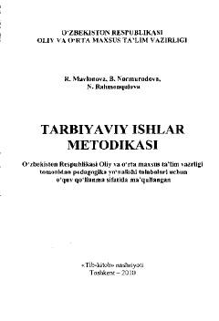

TIPedagogika yo'nalishi talabalari uchun sinfdan va maktabdan tashqari tarbiyaviy ishlar metodikasi.
Mazkur o'quv qo'llanma pedagogika yo'nalishi talabalari uchun mo'ljallangan bo'lib, sinfdan va maktabdan tashqari tarbiyaviy ishlarning maqsadlari, vazifalari hamda tashkiliy-pedagogik asoslarini yoritib beradi. Kitobda yosh avlodni ma'naviy-axloqiy, vatanparvarlik va estetik ruhda tarbiyalashning samarali shakl va usullari bayon etilgan.